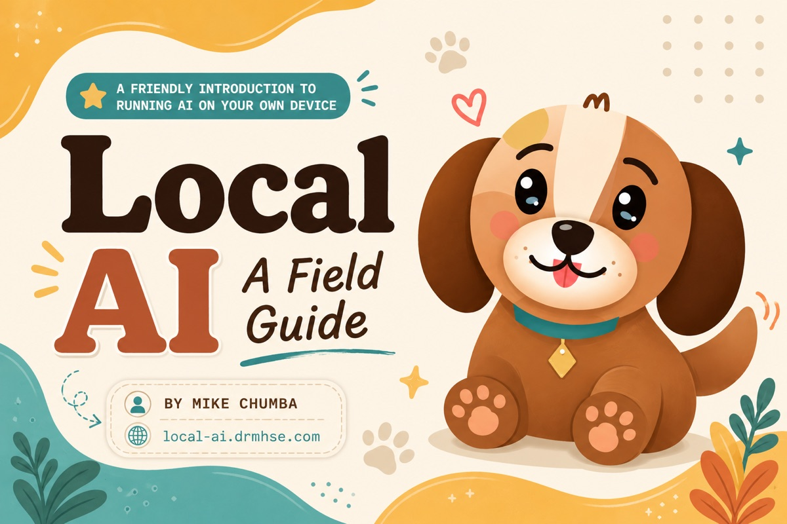

Local AI flips the model. Your hardware, your weights, your data — no API key, no rate limits, no third party reading your prompts.
Sensitive prompts never leave the device. Crucial for legal, medical, internal, and personal data.
No per-token billing. Once you own the GPU, marginal cost approaches zero.
No network round-trip. Tools and agents respond as fast as your hardware allows.
Airplanes, secure facilities, remote sites. Inference doesn't require connectivity.
Pin a model version forever. No silent upgrades changing behavior overnight.
Fine-tune, quantize, swap samplers, edit chat templates. Frontier APIs offer none of this.
Before runtimes and quantization, three numbers define what a model is and what it can do.
7B–14B for everyday, 30B–70B for serious work."hello world" is two tokens; "antidisestablishmentarianism" may be six. Pricing, speed, and limits are all in tokens.Models train in 16-bit floats. At inference, you can compress weights to 8, 5, 4, or even 2 bits with minimal quality loss. This is the single biggest unlock for local AI.
| Precision | Bits | Quality | Size (7B) |
|---|---|---|---|
| FP16 | 16 | Reference | ~14 GB |
| Q8_0 | 8 | ~Identical | ~7.5 GB |
| Q5_K_M | 5.5 | Excellent | ~5.0 GB |
| Q4_K_M | 4.5 | Sweet spot | ~4.1 GB |
| Q2_K | 2.5 | Degraded | ~2.7 GB |
A handful of labs ship the models worth knowing. Each family has a personality, a license, and a release cadence.
Dense (0.6B → 32B) and MoE (Qwen3-Next, 235B-A22B, 3.6 Max). Hybrid thinking mode, MTP drafters. Apache-2.0. Atop most open leaderboards through Q2 2026.
1T-parameter MoE with 32B active, Modified MIT license. April 2026 release ties GPT-5.5 on SWE-Bench Pro. Long-horizon coding agent — runs ~13 hr unattended.
V3.2 Exp, V4 Pro & V4 Flash, R2 reasoning. MTP pioneer at scale. Pushed MATH-500 past 94. The lab that keeps rewriting the training-cost frontier.
1T-32B MoE, currently #1 on the 2026 open leaderboard. Strong agentic + tool use. Zhipu's family has quietly become the model to beat.
Scout (109B/17B, 10M ctx), Maverick (400B/17B, 1M ctx), Behemoth. Native multimodal MoEs. Still the West's flagship open family; license has caveats.
April 2026: E2B, E4B (edge, 128K ctx), 26B MoE, 31B Dense (256K ctx). Vision-native, Apache-2.0, ships with MTP speculative drafters from Google.
Medium 3.5, Small 3 (24B), Codestral, Pixtral (vision), Ministral edge models. Apache-2.0 on most — the cleanest license story in the industry.
Phi-4 (14B), Phi-4-reasoning, Phi-4-mini-instruct (3.8B, 128K, CPU-runnable), Phi-4-multimodal. Synthetic-data philosophy: textbook-quality corpora.
MiniMax M2.7, LG EXAONE 4.5 (33B VLM), IBM Granite Vision 4.1 (enterprise OCR). Worth tracking but rarely the first model you pull.
Also in the mix: Nemotron (NVIDIA), OLMo 2 (AI2 — fully open data + code), SmolLM 2 (HF), Hermes 4 (Nous), Command R+ (Cohere), Granite 4 (IBM), Yi (01.AI). Chinese labs hold most leaderboard top-spots through mid-2026. Verify the trending tab on huggingface.co — releases land weekly.
"7B model" tells you almost nothing. What kind of 7B determines whether it fits your job. The taxonomy that matters.
Pure next-token predictor. Completes patterns, doesn't follow instructions. The starting point for fine-tuning. No "Instruct" or "Chat" suffix on the name.
Post-trained with SFT then RLHF / DPO to follow instructions and converse. What 99% of users actually want. "Instruct," "Chat," or "IT" in the name.
Emits long chains of thought before answering. Strong at math, code, logic. Slower & token-hungry. DeepSeek-R2, Qwen3 thinking mode, Phi-4-reasoning, GLM-5 Think.
Continued pretraining on code, fill-in-the-middle, long-horizon agentic loops. Kimi K2.6, Qwen3-Coder, DeepSeek-Coder V2, Codestral, StarCoder2.
Accepts images alongside text. Llama 4, Qwen3-VL, Gemma 4, Pixtral, InternVL, EXAONE 4.5, Granite Vision 4.1. OCR, screenshots, charts, document Q&A.
Total parameters massive, only a fraction active per token. Kimi K2.6 (1T/32B), GLM-5 (1T/32B), DeepSeek-V4, Llama 4, Qwen3-Next, Gemma 4 26B-MoE. High quality per active-param — but the full model still has to fit in memory.
Adjacent specialists: Embedding (retrieval), Rerankers (cross-encoders), Draft models (tiny pairs for speculative decoding), Distilled (small students of bigger teachers — R1-Distill-Qwen-7B, etc.).
A runtime loads weights and turns prompts into tokens. Pick one based on your interface preference and use case.
| Runtime | Best for | Interface | Notable |
|---|---|---|---|
| llama.cpp | Maximum compatibility, CPU + GPU | CLI / C++ library | The engine under nearly everything else. GGUF native. Beta MTP / speculative decoding as of spring 2026. |
| Ollama | Beginners, fast setup | CLI + REST API | One-liner installs. ollama run qwen3 · ollama run gemma4. |
| LM Studio | GUI users, model discovery | Desktop app | Built-in chat, model browser, OpenAI-compatible server. |
| vLLM | Production serving, throughput | Python server | PagedAttention, continuous batching. Datacenter-grade. |
| ExLlamaV2 | Single-GPU NVIDIA speed | Python library | Best raw inference speed for EXL2 quants. |
| MLX / MLX-LM | Apple Silicon native | Python framework | Uses unified memory directly. Built by Apple. |
| ONNX Runtime | Edge, mobile, Windows GPUs | Cross-platform library | Microsoft's portable inference engine. Phi ships ONNX-native. DirectML on Windows, CoreML on iOS, NPU acceleration on Snapdragon X. |
| text-generation-webui | Power-user tinkering | Web UI | Every backend, every sampler, every knob. |
More than CPU, more than RAM, more than disk: video memory determines what you can run. Compute speed determines how fast. Below — what you'd actually pay to access each tier.
| GPU | VRAM | Buy | Rent / hr | Runs (Q4) |
|---|---|---|---|---|
| RTX 3060 | 12 GB | ~$260 used | ~$0.15 | 7B comfortably |
| RTX 3090 | 24 GB | ~$750 used | ~$0.22 | 13B; 30B tight |
| RTX 4090 | 24 GB | ~$1,900 used | ~$0.45 | 13B–30B |
| RTX 5090 | 32 GB | $3,000–4,000 † | ~$0.90 | 30B comfortable |
| A100 | 80 GB | ~$10,000 | ~$1.30 | 70B at Q8 |
| H100 | 80 GB | ~$22,000 ‡ | ~$1.80 | 70B; 2× for 405B |
| H200 | 141 GB | ~$39,000 | ~$3.60 | 405B at Q4 solo |
| B200 (Blackwell) | 192 GB | $30k–50k | ~$5.00 | 1T MoE at Q4 |
| M3 Ultra Mac Studio | up to 512 GB * | ~$9,500+ | n/a | Anything that fits |
Prices & rentals approximate, USD, May 2026. Spot rates on RunPod / Vast.ai / Lambda vary 2–3× by demand. † 5090 MSRP $1,999 but supply-constrained — street ~$3k+. ‡ H100 falling fast as B200 ramps. * Unified memory shared across CPU and GPU; M5 Ultra Mac Studio expected H2 2026.
Unified memory means CPU and GPU share one pool. A 512 GB M3 Ultra runs a Q4 405B model — slower than an H100, but a single box at ~⅓ the price and silent on your desk.
Behind every "chat" is a precise string format the model was trained on. Get it wrong and quality collapses silently.
// Llama 3 chat template <|begin_of_text|><|start_header_id|>system<|end_header_id|> You are a helpful assistant.<|eot_id|> <|start_header_id|>user<|end_header_id|> What is quantization?<|eot_id|> <|start_header_id|>assistant<|end_header_id|>
// ChatML — used by Qwen, OpenAI-style <|im_start|>system You are a helpful assistant.<|im_end|> <|im_start|>user What is quantization?<|im_end|> <|im_start|>assistant
chat_template field — but you should know it's happening.system turn. Tool calls and reasoning sometimes get their own special tokens.POST /v1/chat/completions with JSON messages: [...].
Server reads each turn: system, user, assistant.
Tokenizer's chat_template wraps each turn with the model's special tokens.
Resulting string becomes token IDs — integers the model actually reads.
Forward pass, sampling, tokens stream back as text to the client.
When the base model doesn't know your stuff, you have two paths. They solve different problems and are often used together.
| Dimension | Fine-tuning | RAG |
|---|---|---|
| Changes | Model weights | Model input (prompt) |
| Best for | Style, format, behavior | Facts, documents, current data |
| Update cost | Hours of GPU time per update | Re-embed changed documents |
| Hallucinations | Can still invent | Grounded in retrieved text |
| Citations | Difficult | Built-in (you have the source) |
| Tooling | Unsloth, Axolotl, TRL, LLaMA-Factory | LangChain, LlamaIndex, Haystack |
| Use when | You need a specific tone or skill | You need the model to know things |
Rule: try RAG first. It's cheaper, more flexible, and easier to debug. Fine-tune only when prompting and retrieval have hit their limits.
Full fine-tuning of a large model requires hundreds of gigabytes of VRAM. LoRA — Low-Rank Adaptation — sidesteps it entirely.
Load the base model in 4-bit, attach a LoRA in 16-bit, train. A 70B fine-tune drops from "8× A100" to "single 24GB GPU." Released 2023, still the default approach.
An embedding model converts a chunk of text into a high-dimensional vector. Similar meanings land near each other in space. This is what powers semantic search.
Similarity = cosine distance between vectors. Closer vectors → more semantically related text.
Retrieval-Augmented Generation. Fetch relevant context, paste it into the prompt, let the model answer with sources.
PDFs, HTML, code, transcripts. Extract clean text.
Split into 256–1024 token windows with overlap.
Run each chunk through the embedding model.
Vectors + chunks + metadata in the vector DB.
Same embedding model as indexing.
Top-k nearest chunks by cosine similarity.
Optional: cross-encoder reorders for relevance.
Stuff into prompt, model answers with citations.
Advanced patterns: hybrid search (BM25 + vectors), HyDE (hypothetical answer embedding), agentic retrieval (model decides what to search for).
Free-form text is the demo. Production systems need parseable output and the ability to call code. Local runtimes support both — better than most people realize.
// Typical tool call emitted by a local model { "name": "search_web", "arguments": { "query": "stanford red hex code" } }
The Model Context Protocol is an open standard for connecting models to tools, data sources, and prompts. One protocol, many servers, any client.
Before MCP, every assistant invented its own plugin format. Now your filesystem server, your GitHub server, your Postgres server work the same way in any MCP-aware client — including local-LLM frontends.
If you remember nothing else, this is the path of least resistance from zero to running.
You can fit Q8 in VRAM, but generation will be slow. Q4_K_M is usually faster AND nearly as good. Quality vs speed isn't linear.
Manually constructing prompts without the model's expected special tokens. Output quality silently tanks.
Temperature 0.7 is fine for chat, terrible for code. Greedy (temp=0) for deterministic tasks. Learn min_p, top_p, repetition_penalty.
Loading a 7B Q4 model uses 4 GB. Then a 32K context conversation adds another 4 GB. Plan for it.
Try the same prompts across models. Use lm-eval-harness or your own test set. Benchmarks rarely reflect your workload.
A well-tuned 14B often beats a sloppy 70B for real tasks. Stop fetishizing size. Test before committing.
Install Ollama. Pull a 7B model. Ask it something. Everything in this deck makes more sense once tokens are streaming out of your own machine.